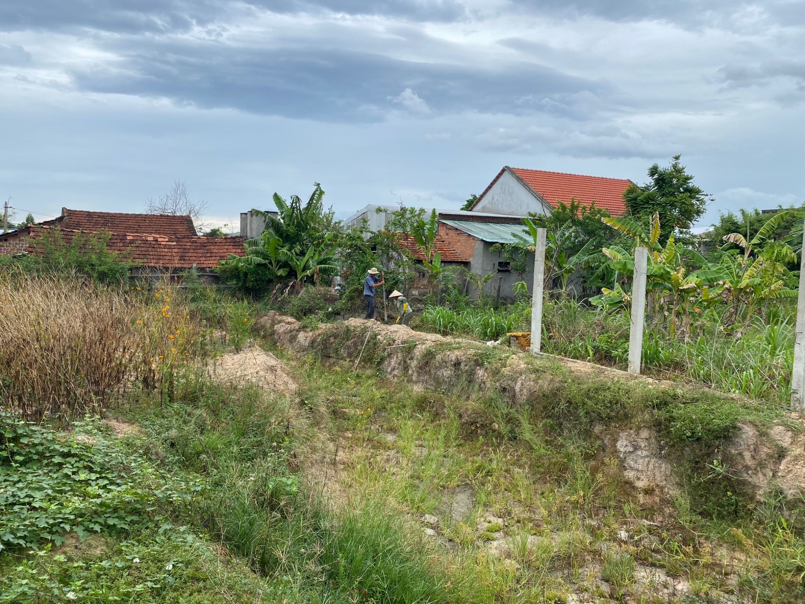
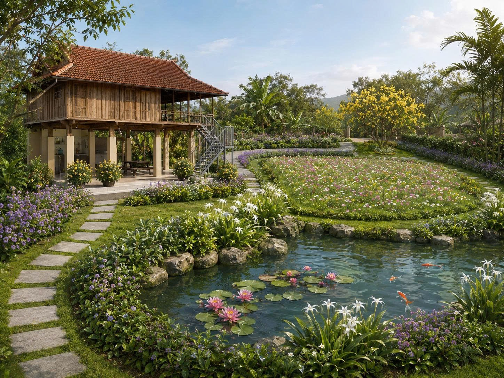
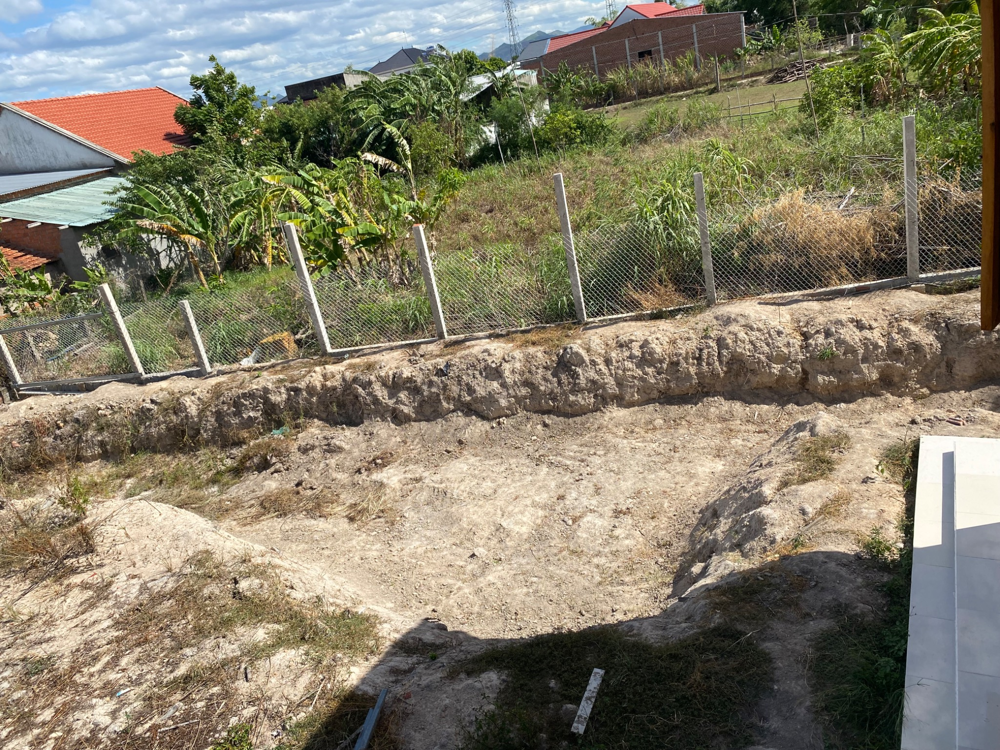
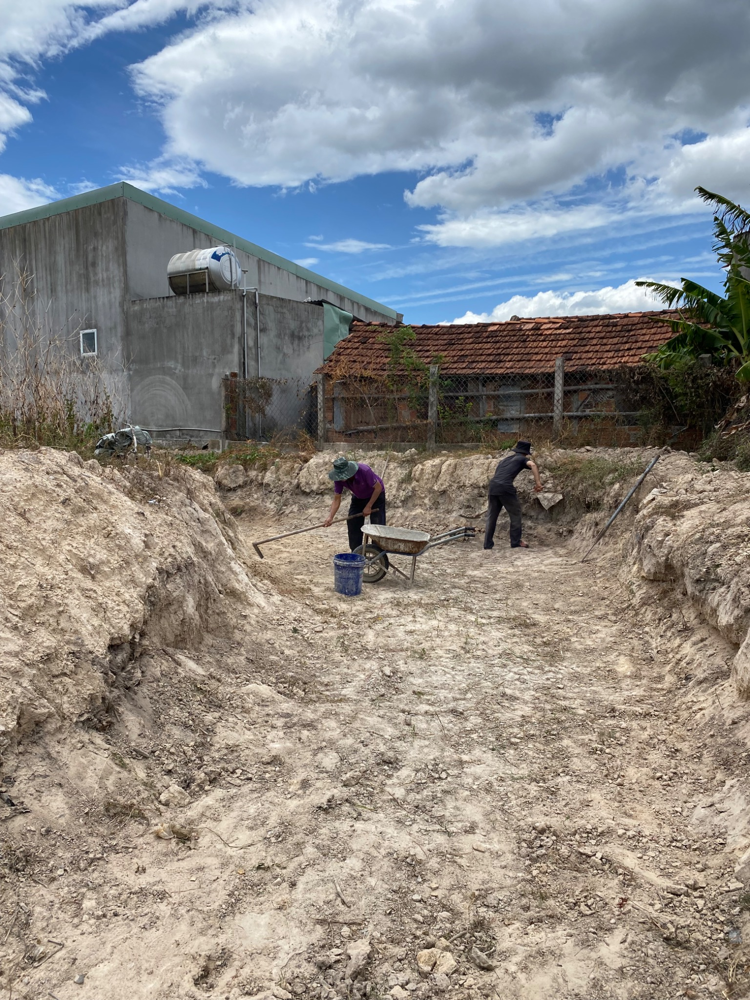
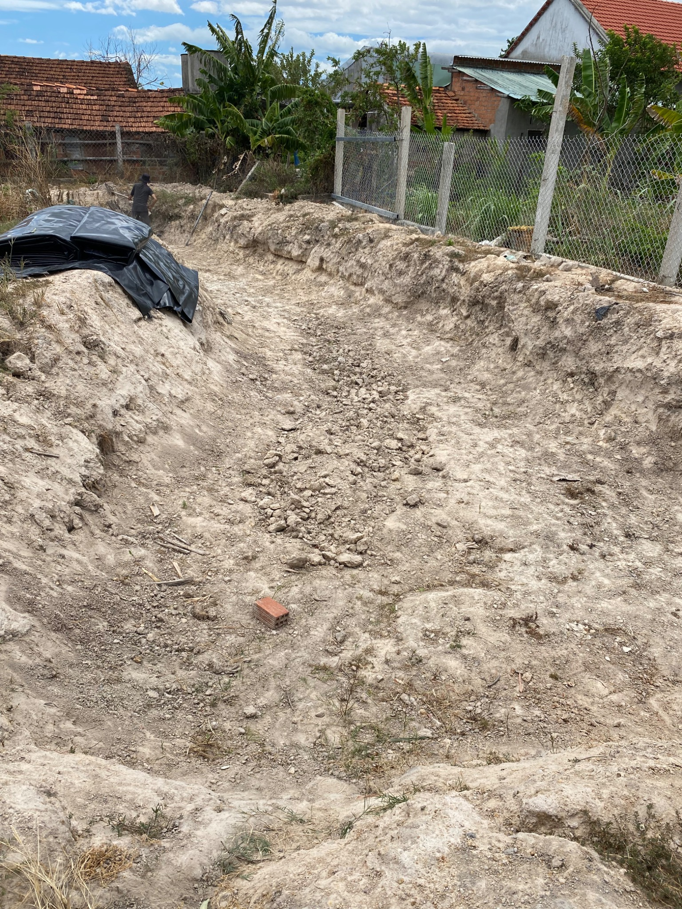
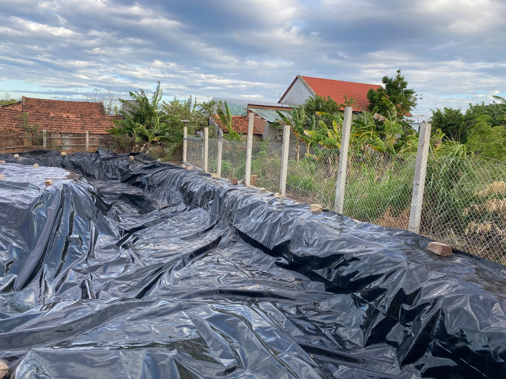
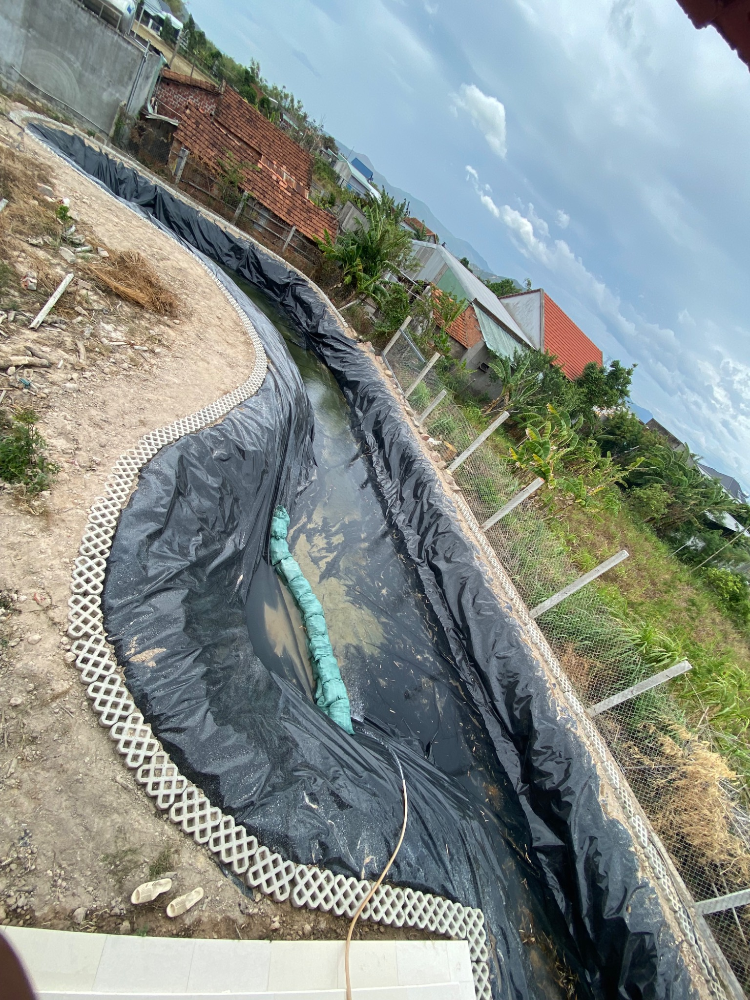
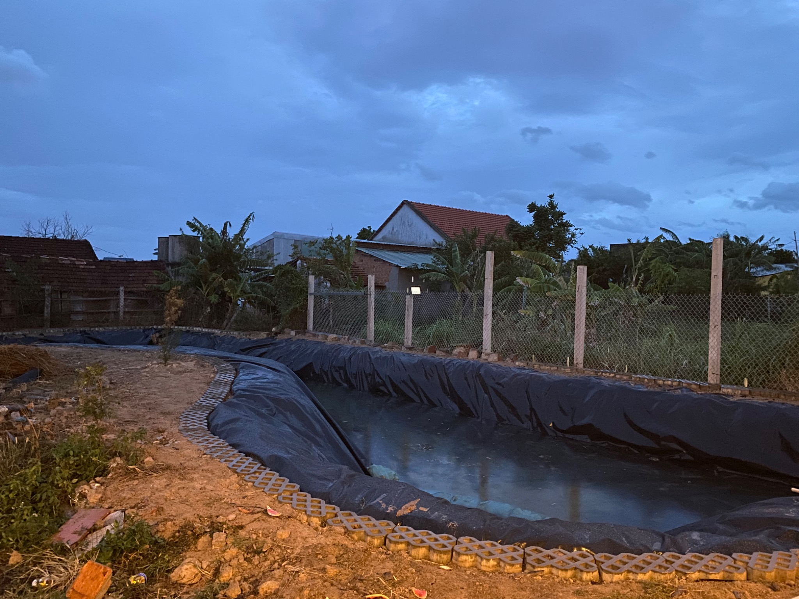

Bối cảnh và ý tưởng cải tạo khu đất
Khu đất khoảng 600m² đã có sẵn một căn nhà sàn, nhưng phần lớn diện tích xung quanh vẫn còn mang trạng thái tự nhiên và chưa được tổ chức thành một tổng thể cảnh quan rõ ràng. Mục tiêu dài hạn là từng bước tạo nên một không gian sống gần gũi thiên nhiên, trong đó nhà sàn, mặt nước và cây xanh kết nối với nhau.
Thay vì cải tạo toàn bộ cùng lúc, từng hạng mục được triển khai theo mức độ ưu tiên để vừa làm, vừa quan sát và điều chỉnh theo điều kiện thực tế. Hồ nước là một trong những hạng mục đầu tiên vì có khả năng tạo thay đổi lớn về cảm nhận không gian và trở thành nền tảng để tiếp tục hoàn thiện cây xanh, lối dạo và khu vực thư giãn.


Thiết kế tổng thể và định vị hồ trên thực địa
Nhà sàn được giữ như điểm trung tâm của không gian. Hồ được bố trí ở khu vực phía trước, tạo một lớp mặt nước gần công trình và mở tầm nhìn ra phần cảnh quan còn lại. Hình dáng hồ ưu tiên đường cong mềm thay vì hình học vuông cứng để phù hợp với tinh thần tự nhiên của khu đất.
Khi chuyển từ ý tưởng sang thực địa, tỷ lệ hồ tiếp tục được kiểm tra bằng góc nhìn thật: nhìn từ nhà sàn, từ lối tiếp cận và từ các vị trí dự kiến bố trí cây xanh. Đây là bước giúp hình dáng hồ không chỉ “đúng trên bản vẽ” mà còn hợp lý khi sử dụng thực tế.
Đo đạc và tính toán bạt HDPE
Với hồ có đường cong tự nhiên, lượng bạt không thể tính chỉ bằng diện tích mặt nước. Khi đo cần tính đồng thời chiều sâu, mái dốc, các đoạn chuyển tiếp và phần dư để cố định mép hồ.
Chọn nguyên kiện giúp chủ động hơn trong thi công một hồ có hình dạng không vuông vức, đồng thời hạn chế việc thiếu vật liệu khi bạt bắt đầu ôm theo địa hình thực tế.
Đào thô, sửa thành hồ và chuẩn bị nền
Sau khi xác định phạm vi, hồ được đào tạo hình. Tuy nhiên, đào thô mới chỉ là bước đầu: thành hồ, đáy hồ và các điểm chuyển tiếp tiếp tục phải được chỉnh thủ công trước khi trải bạt.



Các vị trí có đá sắc, gạch vụn, rễ cây hoặc điểm tỳ cứng được kiểm tra và xử lý. Tại những khu vực có nguy cơ cao, vật liệu mềm có sẵn như bạt cũ hoặc bạt quảng cáo được tận dụng để gia cố cục bộ trước khi phủ lớp HDPE chính.
Trải bạt HDPE và xử lý theo đường cong hồ
Bạt HDPE được đưa xuống lòng hồ và trải theo hình dáng thực tế. Với một tấm bạt lớn, công việc quan trọng là phân phối vật liệu hợp lý thay vì kéo căng ngay từ đầu.
Bạt được giữ một mức độ chùng cần thiết ở mái và các góc để khi cấp nước, trọng lượng nước có thể ép vật liệu dần theo địa hình. Phần bạt dư được đưa lên mép và giữ tạm để hạn chế xê dịch trong lúc thi công.


Thành quả bước đầu: mặt nước thay đổi toàn bộ cảm nhận khu đất
Sau nhiều bước từ ý tưởng, đo đạc, đào đất, sửa thành và đáy, xử lý nền, trải bạt đến cấp nước, hồ đã bắt đầu hình thành rõ ràng trong tổng thể khu đất.
Giá trị dễ nhận thấy nhất không chỉ là “có thêm một hồ nước”. Mặt nước tạo chiều sâu cho không gian phía trước nhà sàn, tăng cảm giác mát mẻ và mở ra nền tảng để tiếp tục hoàn thiện mép hồ, cây xanh, lối đi và các khoảng nghỉ.

Những bài học thực tế từ dự án
Trước khi triển khai
Khu đất còn thô; chưa có điểm nhấn mặt nước; địa hình và cây xanh chưa được tổ chức thành một hệ cảnh quan rõ ràng; nhiều quyết định mới dừng ở mức ý tưởng.
Sau giai đoạn hồ
Mặt nước đã tạo cấu trúc cho không gian; hình dáng khu đất rõ hơn; có dữ liệu thực tế về đo đạc, vật tư, nhân công, xử lý nền và trình tự thi công để tiếp tục phát triển cảnh quan.
Đây không chỉ là quá trình làm một chiếc hồ. Đó là bước đầu biến một ý tưởng cảnh quan thành một không gian có thể nhìn thấy, chạm vào và tiếp tục phát triển theo thời gian.